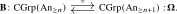
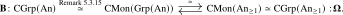

The recognition principle for infinite loop animae identifies connective spectra with commutative group objects in animae. In this section, we prove the equivalence \[ \bOmega ^{\infty }(-)\colon \Sp _{\geq 0} \iso \CGrp (\An ). \] It refines the recognition principle for loop spaces from Section 5.2, which identifies group objects in animae through the equivalence \[ \bOmega \colon \An _{*,\geq 1} \iso \Grp (\An ) \] with inverse given by the classifying anima construction \(\bB \colon \Grp (\An ) \to \An _{*,\geq 1}\). We begin by recalling the definition of \(\Sp _{\geq 0}\):
Definition 5.4.1. An anima \(X\) is called \(0\)-connected if it is connected, i.e. if the set \(\pi _0(X)\) has a single element. It is called \(n\)-connected for \(n \geq 1\) if it is connected and the homotopy groups \(\pi _k(X)\) are trivial whenever \(k \leq n\). It is \((-1)\)-connected whenever it is non-empty. We write \[ \An _{\geq n} \subseteq \An \] for the full subcategory spanned by the \((n-1)\)-connected animae. Thus \(\An _{\geq 0}\) is the full subcategory of non-empty animae. Note that \(X\) is \(n\)-connected if and only if it is connected and \(\Omega X\) is \((n-1)\)-connected.
A spectrum \(X\) is called connective if, for every \(n \geq 1\), its \(n\)-th space \(X_n = \Omega ^{\infty - n}X\) is \((n-1)\)-connected. We write \[ \Sp _{\geq 0} \subseteq \Sp \] for the full subcategory spanned by the connective spectra. Connective spectra are also known as infinite loop spaces.
Remark 5.4.2. Since we have \(\pi _i(X) \cong \pi _{n+i}(X_n)\) whenever \(n + i \geq 0\), we see that a spectrum \(X\) is connective if and only if \(\pi _i(X) = 0\) for \(i < 0\).
The point of commutativity is that the delooping process can be repeated indefinitely: a commutative group \(G\) has a delooping \(\bB G\) which is again a commutative group, then a second delooping \(\bB ^2 G\), and so on, and these deloopings assemble into a spectrum whose zeroth anima is \(G\). Conversely, the underlying anima of every spectrum carries a canonical commutative group structure. We now make this precise, beginning with the delooping of commutative groups.
Lemma 5.4.3 (Group objects detected on path components). A monoid \(M\in \Mon (\An )\) is a group if and only if the ordinary monoid \(\pi _0(M)\) is a group.
Proof. If \(M\) is a group, then applying \(\pi _0\) to its shear isomorphism shows that the shear map of \(\pi _0(M)\) is a bijection, so \(\pi _0(M)\) is a group. Conversely, suppose that \(\pi _0(M)\) is a group. For every point \(x\in M\), choose a point \(y\in M\) whose component is inverse to that of \(x\). The products \(xy\) and \(yx\) lie in the unit component, so multiplication by \(y\) is a homotopy inverse to multiplication by \(x\). The shear map \[ (\pr _1,m)\colon M\times M\longrightarrow M\times M \] is a map over the first factor whose fiber at \(x\) is multiplication by \(x\). It is therefore an isomorphism, and hence \(M\) is a group. □
Proposition 5.4.4. Applying \(\CMon (-)\) to the adjunction \(\bB \dashv \bOmega \) produces an adjunction \[ \bB \colon \CMon (\An ) \simeq \CMon (\Mon (\An )) \rightleftarrows \CMon (\An _*) \overset {\HCode {<span class="source-reference" data-label="rmk:Commutative_Monoids_In_Pointed_Objects">Remark 5.3.21</span>}}{\simeq } \CMon (\An )\noloc \bOmega . \] Moreover, both functors actually land in \(\CGrp (\An )\) and induce for all \(n \geq 0\) an equivalence

Proof. Both \(\bB \) and \(\bOmega \) preserve finite products: for \(\bB \) this is Lemma 5.1.16, while \(\bOmega \) preserves them because it is a right adjoint. We may therefore apply \(\CMon (-)\) to the adjunction.
For the first claim, it remains to argue that the forgetful functor \(\Mon (\An ) \to \An \) induces an equivalence \[ \CMon (\Mon (\An )) \iso \CMon (\An ). \] Since both \(\CMon (-)\) and \(\Mon (-)\) are defined as certain limit-preserving functors, there is an obvious equivalence \(\CMon (\Mon (\An )) \simeq \Mon (\CMon (\An ))\), and under this equivalence the previous functor corresponds to the forgetful functor \[ \Mon (\CMon (\An )) \to \CMon (\An ). \] But since \(\CMon (\An )\) is semiadditive by Proposition 5.3.20, this forgetful functor is an equivalence by Proposition 5.3.17.
Combining Lemma 5.4.3 with Remark 5.3.15, a commutative monoid \(X \in \CMon (\An )\) is a commutative group if and only if its monoid of path components \(\pi _0(X)\) is a group. We check that both functors land in \(\CGrp (\An )\): the anima \(\bB M\) is connected, so \(\pi _0(\bB M) = *\) is trivially a group; and for \(X \in \CMon (\An _*)\) we have \(\pi _0(\bOmega X) = \pi _1(X)\), which is a group because loop spaces are grouplike. Hence the adjunction restricts to commutative groups, and by Theorem 5.2.1 we get that it restricts to an equivalence

Here we use Remark 5.3.21 to pass between commutative monoids in pointed animae and pointed commutative monoids in animae. The claim for arbitrary \(n\) follows because \(\bB G\) is \(n\)-connected if and only if \(G \simeq \bOmega \bB G\) is \((n-1)\)-connected. □
Corollary 5.4.5 (Group completion). The inclusion \(\CGrp (\An ) \hookrightarrow \CMon (\An )\) admits a left adjoint \[ (-)^{\grp }\colon \CMon (\An ) \to \CGrp (\An ) \] called group completion. It is given on objects by \(M \mapsto \bOmega \bB M\).
Proof. It follows immediately from the proposition that for every commutative group \(G \in \CGrp (\An )\), precomposition with the unit \(M \to \bOmega \bB M\) defines an equivalence \[ \Hom _{\CGrp (\An )}(\bOmega \bB M, G) \iso \Hom _{\CMon (\An )}(M,G), \] since both sides are equivalent to \(\Hom _{\CMon (\An _*)}(\bB M, \bB G)\). □
After all this hard work, we are now able to prove the claim that connective spectra are commutative groups in \(\An \):
Theorem 5.4.6 (Recognition principle for connective spectra, cf. May (1972), Boardman and Vogt (1973)). The functor \(\Omega ^{\infty }\colon \Sp \to \An \) uniquely lifts to a functor \[ \bOmega ^{\infty }\colon \Sp \to \CGrp (\An ). \] This functor admits a fully faithful left adjoint \[ \bB ^{\infty }\colon \CGrp (\An ) \hookrightarrow \Sp \] whose image is precisely the subcategory \(\Sp _{\geq 0}\) of connective spectra.
Proof. Since \(\Omega ^{\infty }\) preserves finite products and \(\Sp \) is additive by Lemma 4.2.17, the fact that \(\Omega ^{\infty }\) uniquely lifts to \(\CGrp (\An )\) is an immediate consequence of the fact that \(\CGrp (-)\colon \Cat ^{\mathrm {prod}}_{\infty } \to \Cat _{\infty }^{\add }\) is right adjoint to the inclusion functor, see Proposition 5.3.23.
For the left adjoint, we use the equivalence \(\bB ^n\colon \CGrp (\An ) \iso \CGrp (\An _{\geq n})\) from Proposition 5.4.4, with inverse given by the iterated loop space functor \(\bOmega ^n\). For a commutative group \(G\), we may now define the spectrum \(\bB ^{\infty }G\) as follows: \[ \bB ^{\infty } G \quad := \quad (\bB ^n G, \sigma _n\colon \bB ^nG \iso \Omega \bB ^{n+1}G), \] where the structure maps \(\sigma _n\) are the units of the adjunction \(\bB \dashv \bOmega \). To see that this is a left adjoint to \(\bOmega ^{\infty }\colon \Sp \to \CGrp (\An )\), note that by additivity of \(\Sp \) we get an equivalence \(\Sp \simeq \CGrp (\Sp ) \simeq \Sp (\CGrp (\An ))\), so that we may write \(\Sp \) as the following limit: \[ \Sp \quad \simeq \quad \lim ( \, \cdots \xrightarrow {\Omega } \CGrp (\An ) \xrightarrow {\Omega } \CGrp (\An ) \xrightarrow {\Omega } \CGrp (\An )). \] We may then compute \begin {align*} \Hom _{\Sp }(\bB ^{\infty }G, X) &\simeq \lim _n \Hom _{\CGrp (\An )}(\bB ^n G, X_n) \\ &\simeq \lim _{n} \Hom _{\CGrp (\An )}(G, \Omega ^n X_n) \\ &\simeq \lim _{n} \Hom _{\CGrp (\An )}(G, X_0) \\ &\simeq \Hom _{\CGrp (\An )}(G, X_0). \end {align*}
Indeed, the structure isomorphisms \(\sigma _n\colon X_n \iso \Omega X_{n+1}\) induce compatible isomorphisms \(\Omega ^nX_n \iso \Omega ^{n+1}X_{n+1}\), identifying the resulting diagram constantly with \(X_0\). Since all these equivalences are natural in \(G\) and \(X\), this provides the adjunction. From this computation it also follows immediately that the unit \(G \to \bOmega ^{\infty }\bB ^{\infty }G\) of the adjunction is simply the identity map of \(G\), hence is an isomorphism, showing that the functor \(\bB ^{\infty }\colon \CGrp (\An ) \to \Sp \) is fully faithful. The essential image is the subcategory of the above limit given by \[ \CGrp (\An ) \quad \simeq \quad \lim ( \, \cdots \xrightarrow [\simeq ]{\Omega } \CGrp (\An _{\geq 2}) \xrightarrow [\simeq ]{\Omega } \CGrp (\An _{\geq 1}) \xrightarrow [\simeq ]{\Omega } \CGrp (\An )), \] which are precisely those spectra \(X\) such that \(X_n\) is \((n-1)\)-connected for all \(n \geq 1\), i.e. the connective spectra. □
Corollary 5.4.7. The inclusion \(\Sp _{\geq 0} \hookrightarrow \Sp \) admits a right adjoint \(\tau _{\geq 0}\colon \Sp \to \Sp _{\geq 0}\) given by \(\tau _{\geq 0}(X) = \bB ^{\infty }\bOmega ^{\infty }X\). □
Corollary 5.4.8. There is a fully faithful functor \[ \bB ^{\infty }\colon \Ab = \CGrp (\Set ) \hookrightarrow \CGrp (\An ) \xrightarrow {\bB ^{\infty }} \Sp \] from the category of abelian groups into the \(\infty \)-category of spectra. Here the first functor is induced by the fully faithful finite-product-preserving inclusion \(\Set \hookrightarrow \An \). □
Definition 5.4.9. The spectrum \(\bB ^{\infty }A\) associated to an abelian group is called the Eilenberg–MacLane spectrum associated to \(A\), and is classically denoted by \(HA\). Because the functor \(\bB ^{\infty }\) is fully faithful, we will frequently treat it as an inclusion and abusively denote the Eilenberg–MacLane spectrum again by \(A\).
Remark 5.4.10. The agreement with the construction of Eilenberg–MacLane spectra from derived categories is explained in Remark 6.2.4.
Generated from the authoritative LaTeX source.